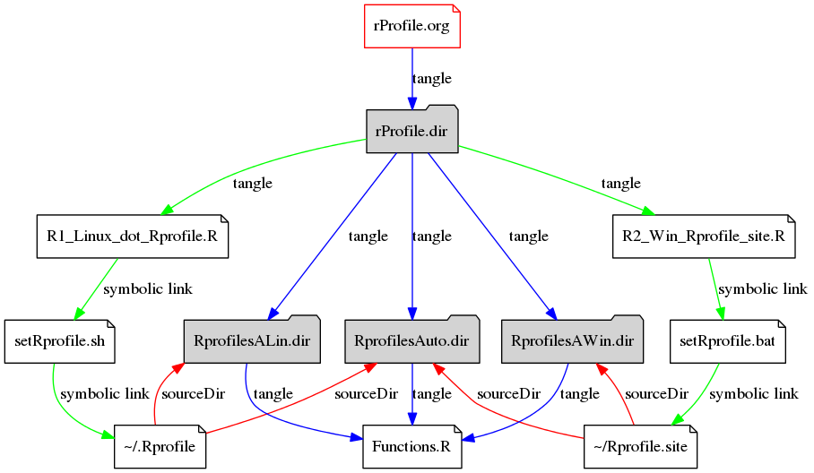

Rprofile
Table of Contents
A Rprofile package to make my .Profile portable
1 Workfolow
Tips:
- Only edit this file rProfile.org for all R*thing
- All setup files are tangled from this file
- Make a new envrionment Variables for new user on windows HOME %USERPROFILE%
- Reuse the code by file cross reference
<<codeName>>with header noweb:yes - Export to html and check it here. C-c C-e h o

2 Packages Structure
2.1 Objective
Make most frequently used Options, Variables, Functions, and Shortcuts portable
2.2 Documents Structure
| Org Header | Part1 | <<Part2>> |
|---|---|---|
| Target | .Rprofile | Rprofile Packages |
| Property | #+HEADER: | #+HEADER: |
| #+NAME: | Name | NULL |
| :tangle | File | File(../R) |
| :noweb | no | yes |
| :export | no | yes(code) |
3 Install R
3.1 Install R from Source
[ ]Download Tarball of Latest R http://cran.r-project.org/ ftp://ftp.stat.math.ethz.ch/Software/R/ http://cran.r-project.org/src/[ ]Install Required Depencies[ ]untar and configure[ ]make and make install
#!/bin/sh sudo apt-get build-dep r-base-core tar zxvf R-* . cd R* # ./configure --prefix=/where/you/want/R/to/go (typically /usr/local or /opt/local) and can be set by # ./configure --prefix=/home/tian/Dropbox/soft/linux/R/$verR <options> # --with-x=no and --enable-R-shlib if you just use rstudio # no x need and shared/dynamic library libR.so # This will install to the following directories: # prefix/bin or bindir # the front-end shell script and other scripts and executables # prefix/man/man1 or mandir/man1 # the man page # prefix/LIBnn/R or libdir/R # all the rest (libraries, on-line help system, . . . ). # Here LIBnn is usually ‘lib’, but may be ‘lib64’ on some 64-bit Linux systems. # ./configure --prefix=/usr/local --with-x=no --enable-R-shlib --enable-prebuilt-html ./configure --enable-R-shlib --prefix=/usr/local make # make check # make info # make pdf # make tests sudo make install # sudo make install-pdf ### ebooks, requires ebook-convert from Calibre (http: / / calibre-ebook . com / download) #make ebooks # make epub # make mobi # make install rhome=/usr/local/lib64/R-3.0.3 # make prefix=/path/to/here install-libR ##made R as a shared/dynamic library # make install-info # make install-pdf ## PDF versions of the manuals # make install-tests ## run-time tests that are part of make check-all # ============================================================================== # 2 Symbolic Link or Set $PATH, link is more simple and convenient # path is better due to no new files created: PATH for R Rstudio ESS ESS help # ============================================================================== # sudo ln -sfv ~/Dropbox/soft/linux/R/${verR}/bin/R /usr/local/lib/R/library # sudo ln -sfv ~/Dropbox/soft/linux/R/${verR}/bin/R /usr/local/bin/R #sudo mkdir -p -- /usr/local/lib/R #sudo ln -sfv ~/Dropbox/soft/linux/R/${verR}/ /usr/local/bin/R #mkdir -p -- /usr/local/lib/R/doc/manual #sudo rm -vf /usr/share/man/man1/R.1.gz # export PATH=${PATH}:/home/tian/Dropbox/soft/linux/R/R-3.0.3/bin # export RSTUDIO_WHICH_R=/home/tian/Dropbox/soft/linux/R/R-3.0.3/bin/R # ============================================================================== # 3 Check the install # ============================================================================== echo "which R is:" $(which R) echo "whereis R is:" $(whereis R)
3.2 Install R on Deb :Debian Ubuntu, Mint and so on
Download the script below from here rInstall.deb.sh
# This file is automatically created by rIntall.org, Do not change here!!! #!/bin/sh sudo apt-get update & apt-get upgrade ## Update the package list sudo apt-get build-dep -y r-base-core ## Install the depencies sudo apt-get install -y r-base-core ## Install r-base-core sudo apt-get install -y r-mathlib ## Math sudo apt-get install -y ess ## Emacs ess-mode sudo apt-get install -y r-doc-html sudo apt-get install -y r-doc-info sudo apt-get install -y r-doc-pdf echo "which R is:" $(which R) echo "where R is:" $(whereis R)
which R is: /usr/bin/R
where R is: R: /usr/bin/R /etc/R /usr/lib/R /usr/bin/X11/R /usr/local/lib/R /usr/share/R /usr/share/man/man1/R.1.gz
3.3 Install Packages
| Type | Packages | Install | Update |
|---|---|---|---|
| CRAN | base | install.packages | update.packages |
| CRAN | ctv | install.views | update.views |
| github | devtools | ||
| Tarball | |||
| Rstudio |
# This file was automatically created by rInstall.org and Sourced by Rprofie if(!require(ctv)){ install.packages("ctv") } else { install.views(c("Spatial", "SpatioTemporal")) }
3.4 update R and Installed packages
3.5 Remove R from Linux
4 R profiles Functions and Options
4.1 R profile Variables
4.2 Set Proxy
setProxy <- function(proxy){ proxy = "http://proxy.kuins.net:8080/" Sys.setenv("http_proxy" = proxy) }
4.3 Set Shared Library with Dropbox
ln -sfv ~/Dropbox/soft/linux/R/library/3.0 ~/Dropbox/soft/linux/R/R-3.0.3/library
## set a shared Library for all Machine by Dropbox .libPaths("~/Dropbox/config/R/rLib/Linux64/3.1")
4.4 Set Alias for shortcut
- State “FIXIT” from “DOING”
cd <- setwd pwd <- getwd h <- head s <- summary n <- names len <- length
4.5 Set nearest CRAN mirror
Find nearest CRAN to your location from list of CRAN mirrors and set up with
## Don't ask me for my CRAN mirror every time local({r <- getOption("repos") r["CRAN"] <- "http://cran.ism.ac.jp/" options(repos=r)})
4.6 First Function
.First() run at the start of every R session.
- Use to load commonly used packages
- set default workspace
## Don't ask me for my CRAN mirror every time .First <- function() { cat("Current R.version is:", as.character(getRversion()), "\n") cat("Current R.repos is:", getOption("repos"), "\n") cat("Current R.Library is:", .libPaths(), "\n") cat("Current R.Workdir is:", getwd(), "\n") cat("\nSuccessfully loaded .Rprofile at:", date(), "\n") if (file.exists(".RData")) load(file=".RData") }
4.7 Last Function
.Last() run at the end of the session
.Last <- function() { # save command history here? ask=graphics #update.packages(ask= FALSE) #timestamp(,prefix=paste("##------ [",getwd(),"] ",sep="")) #try(savehistory("~/.Rhistory")) cat("\nGoodbye at ", date(), "\n") }
4.8 Main Options
options(prompt="R:> ", digits=4, show.signif.stars=FALSE) ## R Prompt ## WARNING!!! This makes your code less portable/reproducible. options(stringsAsFactors=FALSE) # Paper size options(papersize="a4") options(max.print = 20000) options(help_type="html") Sys.setenv(R_HISTSIZE='100000') # General options options(digits=15) options("width"=80) # wide display with multiple monitors options(tab.width = 8) options("digits.secs" = 3) # show sub-second time stamps
4.9 Knit Options
4.10 Raster Options
4.11 myFucntions
R_ver <- as.character(getRversion()) .upR <- function() { if(!require(installr)) { install.packages("installr") } #load / install+load installr updateR() # this will only work AFTER R 3.0.0 update.packages(checkBuilt=TRUE, ask = FALSE) } .upPkgs <- function() { update.packages(checkBuilt=TRUE, ask = FALSE, dependencies = c('Suggests')) } rnw2r <- function(Rnw){ purl(Rnw) }
4.12 phdFunctions
5 Dot.Rprofile and Rprofole.site
5.1 Linux main R profile which linked to ~/.Rprofile see 1
### This file is sourced by or symbol linked to ~/.Rprofile sourceDir <- function(path = ".") { for (file in list.files(path, pattern = "\\.[Rr]$")) { source(file.path(path,file)) } } sourceDir("~/Dropbox/config/R/rProfile/RprofilesAuto") sourceDir("~/Dropbox/config/R/rProfile/RprofilesLinux")
6 Quick setting of R profile
6.1 Linux
# Now=$(date +%Y-%m-%d-%H%M%S) # cp ~/.Rprofile ~/.Rprofile.$Now unalias ln ln -sfv ~/Dropbox/config/R/rProfile/R00_Linux_dot_Rprofile.R ~/.Rprofile
6.2 Windows
# Now=$(date +%Y-%m-%d-%H%M%S) # cp ~/.Rprofile ~/.Rprofile.$Now mklink /d "~/R_HOME/etc/Rprofile.site" "~/Dropbox/R/rProfile/R01_Win_Rprofile_site.R"
6.3 Multiple version R Control
#!/bin/sh ## Define Variables r3home=/home/tian/Dropbox/soft/linux/R/R-3.0.3
## 0. Set installed R with versions sudo ln -siv ${r3home}/bin/R /bin/R3 #sudo ln -siv ${rdevhome}/bin/R /bin/Rdev ## 1. Set up R for ESS search
## 2. set up R for ESS help files #!/bin/bash
sudo cp /etc/R/Renviron ~/Dropbox/config/Rconfig/Renviron/linuxRenviron.R sudo rm -f /etc/R/Renviron nano ~/Dropbox/config/Rconfig/Renviron/linuxRenviron.R
ln -svf ~/Dropbox/config/Rconfig/Renviron/linuxRenviron.R /etc/R/Renviron